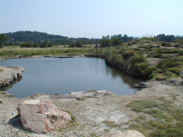
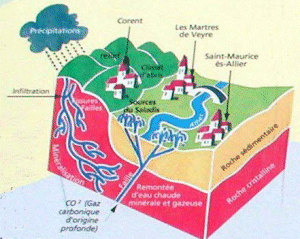
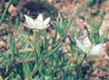
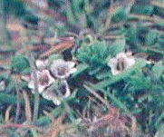
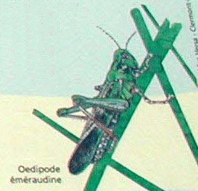

|

Le Grand Saladis (photo personnelle)
|
Sur plus de 600 sources minérales
en Auvergne seules 16 sont salées et
accueillent une flore et une faune normalement
rencontrées au bord de la mer.
Patrimoine d'intérêt européen
ces milieux salés constituent des espaces naturels
à protéger absolument.
|
Un voyage dans les profondeurs
Au terme d'un voyage de quelques dizaines
d'années dans les profondeurs de la terre, l'eau de
pluie revient minéralisée en surface.

Extrait du panneau
implanté par le
Conservatoire des Espaces Naturels en Auvergne
|
|
La mer aux pieds des sources
Autour des sources salées du Grand et du
Petit Saladis on découvre des plantes aux
appellations aussi curieuses que le Glaux maritime, le
Plantain maritime, la Spergulaire marginée.

Très rares en France à
l'intérieur des terres ces plantes sont
protégées par la loi en Auvergne.

Adaptées pour vivre dans un milieu aussi
hostile, elles sont appelées plantes halophiles (halo
= sel ; phile = qui aime).
Grâce à leurs feuilles charnues
elles limitent leur perte en eau et peuvent ainsi mieux
supporter la présence de sel.
|

Au cœur de cette végétation
particulière on rencontre quelques insectes
très discrets : petits coléoptères et
criquets préférant les sols salés…
libellules en chasse ou de passage.
Photos extraites du
panneau implanté sur place par le Conservatoire des Espaces Naturels en
Auvergne
|
Un riche passé et des vertus
thérapeutiques
On reconnaît aux Sources du Saladis
des propriétés thérapeutiques pour les
affections cutanées, rhumatismales …
Des nombreuses découvertes
archéologiques réalisées dans ce
secteur témoignent d'un usage de ces eaux vertueuses
depuis l'époque gallo-romaine. Les Martres de Veyre,
le bourg voisin, auraient même pu posséder au
début du siècle, une grande station thermale
mais ce projet est resté sans suite pour des raisons
financières.
Source : Panneau de
présentation des Sources du Saladis implanté
par le Conservatoire des Espaces Naturels en
Auvergne
 Si vous entrez directement :
Vers l'entrée
du site, cliquez ici
Comment y aller ?
Sur la route qui va des Martres de Veyre à
Vic le Comte, tourner à droite avant le pont de
Longues. On passe sous ce pont et la source n'est pas loin,
à droite de la petite route.
Si vous entrez directement :
Vers l'entrée
du site, cliquez ici
Comment y aller ?
Sur la route qui va des Martres de Veyre à
Vic le Comte, tourner à droite avant le pont de
Longues. On passe sous ce pont et la source n'est pas loin,
à droite de la petite route.

|